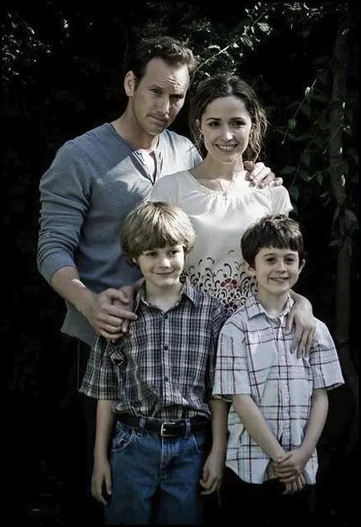
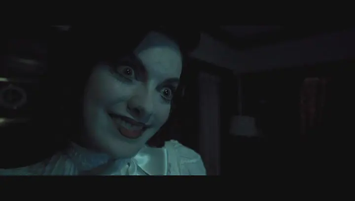
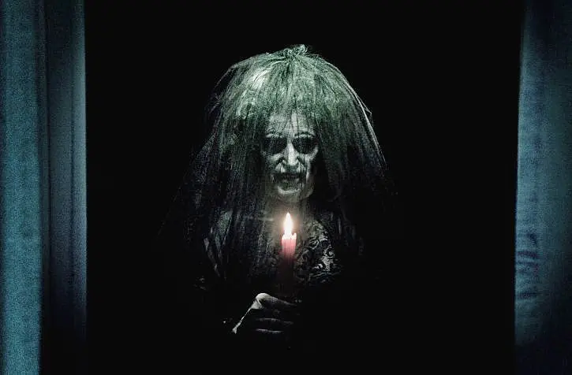
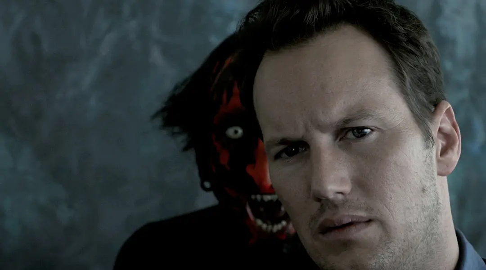
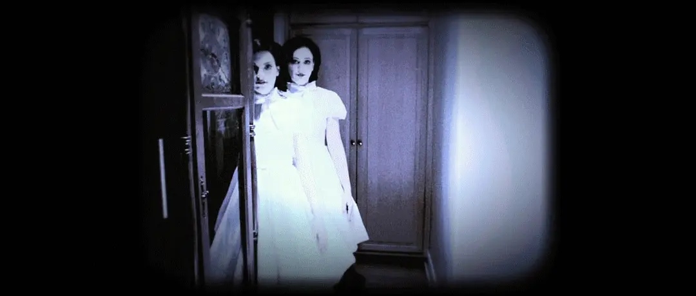

Rate
7.8/10
Synopsis
Josh Lemport, a high school teacher, and his wife, Lanna, a freelance musician, have a happy family of five. But since they moved to their new home, panic and anxiety followed. Infant daughter Kelly often cries for no apparent reason, second son Foster is terrified of the bedroom, and eldest son Dalton falls into a prolonged coma after a fright. After this, all kinds of strange and terrifying events happened one after another. The Lemberts were so overwhelmed that they nearly broke down, and they finally decided to move out of the ominous place. But it didn't end there. The devil who infested them seemed to follow the Lempot family to their new residence, and even threatened to occupy Dalton's body.
Stills
    Role table
| Role | Cast |
|---|---|
| Josh Lambert | Patrick Wilson |
| Renai Lambert | Rose Byrne |
| Dalton Lambert | Ty Simpkins |
| Elise Rainier | Lin Shaye |
Reviews
- It seems that James Wan is about to take over the title of the contemporary horror master. The movement of the camera, the location and time of the appearance of the ghost are so accurate and awesome, there is no one! ! ! Although the rhythm of the first half is a little slow, the latter part is so exciting, as well as the awesome ending. This is the best horror movie Hollywood has produced in two years! Finally, Patrick Wilson's performance is brilliant! Worth seeing!
- The puppet scene has a director's chainsaw and a deadly feel, it's scary enough, the twists and turns are enough for the plot, the ending is enough to reverse, and there are a few cold humor... It's a masterpiece that hasn't appeared in a long time.
- James Wan definitely has childhood shadows